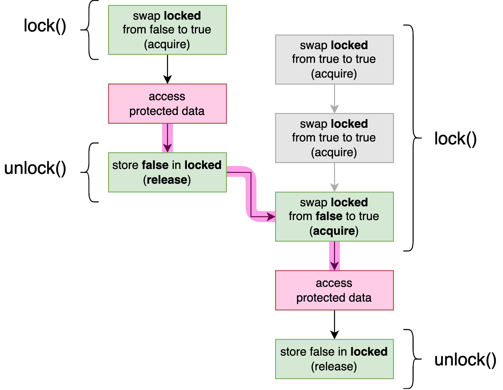

Many real-world implementations of mutexes, including std::sync::Mutex on some platforms, briefly behave like a spin lock before asking the operating system to put a thread to sleep. This is an attempt to combine the best of both worlds, although it depends entirely on the specific use case whether this behavior is beneficial or not.
Building Our Own Spin Lock
Building Our Own Spin Lock
Locking a regular mutex (see "Locking: Mutexes and RwLocks" in Chapter 1) will put your thread to sleep when the mutex is already locked. This avoids wasting resources while waiting for the lock to be released. If a lock is only ever held for very brief moments and the threads locking it can run in parallel on different processor cores, it might be better for the threads to repeatedly try to lock it without actually going to sleep.
A spin lock is a mutex that does exactly that. Attempting to lock an already locked mutex will result in busy-looping or spinning: repeatedly trying over and over again until it finally succeeds. This can waste processor cycles, but can sometimes result in lower latency when locking.
Note
In this chapter, we’ll build our own SpinLock type, applying what we’ve learned in Chapters 2 and 3, and see how we can use Rust’s type system to provide a safe and useful interface to the user of our SpinLock.
A Minimal Implementation
Let’s implement such a spin lock from scratch.
The most minimal version is pretty simple, as follows:
pub struct SpinLock {
locked: AtomicBool,
}All we need is a single boolean that indicates whether it is locked or not. We use an atomic boolean, since we want more than one thread to be able to interact with it simultaneously.
Then all we need is a constructor function, and the lock and unlock methods:
impl SpinLock {
pub const fn new() -> Self {
Self { locked: AtomicBool::new(false) }
}
pub fn lock(&self) {
while self.locked.swap(true, Acquire) {
std::hint::spin_loop();
}
}
pub fn unlock(&self) {
self.locked.store(false, Release);
}
}The locked boolean starts at false, the lock swaps that for true and keeps trying if it was already true, and the unlock method just sets it back to false.
Note
Instead of using a swap operation, we could also have used a compare-and-exchange operation to atomically check if the boolean is false and set it to true if that’s the case:
while self.locked.compare_exchange_weak(
false, true, Acquire, Relaxed).is_err()It’s a bit more verbose, but depending on your tastes this might be easier to follow, as it more clearly captures the concept of an operation that can fail or succeed. It might also result in slightly different instructions, however, as we’ll see in Chapter 7.
Within the while loop, we use a spin loop hint, which tells the processor that we’re spinning while waiting for something to change. On most major platforms, this hint results in a special instruction that causes the processor core to optimize its behavior for such a situation. For example, it might temporarily slow down or prioritize other useful things it can do. Unlike blocking operations such as thread::sleep or thread::park, however, a spin loop hint does not cause the operating system to be called to put your thread to sleep in favor of another thread.
Note
In general, it’s a good idea to include such a hint in a spin loop. Depending on the situation, it might even be good to execute this hint several times before attempting to access the atomic variable again. If you care about the last few nanoseconds of performance and want to find the optimal strategy, you’ll have to benchmark your specific use case. Unfortunately, the conclusions of such benchmarks can be highly dependent on the hardware, as we’ll see in Chapter 7.
We use acquire and release memory ordering to make sure that every unlock() call establishes a happens-before relationship with the lock() calls that follow. In other words, to make sure that after locking it, we can safely assume that whatever happened during the last time it was locked has already happened. This is the most classic use case of acquire and release ordering: acquiring and releasing a lock.
Figure 4-1 visualizes a situation where our SpinLock is used to protect access to some shared data, with two threads concurrently attempting to acquire the lock. Note how the unlock operation on the first thread forms a happens-before relationship with the lock operation on the second thread, which makes sure the threads cannot access the data concurrently.

An Unsafe Spin Lock
Our SpinLock type above has a fully safe interface since, by itself, it doesn’t cause any undefined behavior when misused. In most use cases, however, it will be used to protect mutations to a shared variable, which means the user will still have to use unsafe, unchecked code.
To provide an easier interface, we can change the lock method to give us an exclusive reference (&mut T) to the data protected by the lock, since in most use cases, it’s the lock operation that guarantees that it’s safe to assume exclusive access.
To be able to do that, we have to change the type to be generic over the type of data it protects and add a field to hold that data. Since this data can be mutated (or accessed exclusively) even though the spin lock itself is shared, we need to use interior mutability (see "Interior Mutability" in Chapter 1), for which we’ll use an UnsafeCell:
use std::cell::UnsafeCell;
pub struct SpinLock<T> {
locked: AtomicBool,
value: UnsafeCell<T>,
}As a precaution, UnsafeCell does not implement Sync, which means that our type is now no longer shareable between threads, making it rather useless. To fix that, we need to promise to the compiler that it is actually safe for our type to be shared between threads. However, since the lock can be used to send values of type T from one thread to another, we must limit this promise to types that are safe to send between threads. So, we (unsafely) implement Sync for SpinLock<T> for all T that implement Send, like this:
unsafe impl<T> Sync for SpinLock<T> where T: Send {}Note that we don’t need to require that T is Sync, because our SpinLock<T> will only allow one thread at a time to access the T it protects. Only if we were to give multiple threads access at once, like a reader-writer lock does for readers, would we (additionally) need to require T: Sync.
Next, our new function now needs to take a value of type T to initialize that UnsafeCell with:
impl<T> SpinLock<T> {
pub const fn new(value: T) -> Self {
Self {
locked: AtomicBool::new(false),
value: UnsafeCell::new(value),
}
}
…
}And then we get to the interesting part: lock and unlock. The reason we are doing all this, is to be able to return a &mut T from lock(), such that the user isn’t required to write unsafe, unchecked code when using our lock to protect their data. This means that we now have to use unsafe code on our side, within the implementation of lock. An UnsafeCell can give us a raw pointer to its contents (*mut T) through its get() method, which we can convert to a reference within an unsafe block, as follows:
pub fn lock(&self) -> &mut T {
while self.locked.swap(true, Acquire) {
std::hint::spin_loop();
}
unsafe { &mut *self.value.get() }
}Since the function signature of lock contains a reference both in its input and output, the lifetimes of the &self and &mut T have been elided and assumed to be identical. (See "Lifetime Elision" in "Chapter 10: Generic Types, Traits, and Lifetimes" of the Rust Book.) We can make the lifetimes explicit by writing them out manually, like this:
pub fn lock<'a>(&'a self) -> &'a mut T { … }This clearly shows that the lifetime of the returned reference is the same as that of &self. This means that we have claimed that the returned reference is valid as long as the lock itself exists.
If we pretend unlock() doesn’t exist, this would be a perfectly safe and sound interface. A SpinLock can be locked, resulting in a &mut T, and can then never be locked again, which guarantees this exclusive reference is indeed exclusive.
If we try to add the unlock() method back, however, we would need a way to limit the lifetime of the returned reference until the next call to unlock(). If the compiler understood English, perhaps this would work:
pub fn lock<'a>(&self) -> &'a mut T
where
'a ends at the next call to unlock() on self,
even if that's done by another thread.
Oh, and it also ends when self is dropped, of course.
(Thanks!)
{ … }Unfortunately, that’s not valid Rust. Instead of trying to explain this limitation to the compiler, we’ll have to explain it to the user. To shift the responsibility to the user, we mark the unlock function as unsafe, and leave a note for them explaining what they need to do to keep things sound:
/// Safety: The &mut T from lock() must be gone!
/// (And no cheating by keeping references to fields of that T around!)
pub unsafe fn unlock(&self) {
self.locked.store(false, Release);
}A Safe Interface Using a Lock Guard
To be able to provide a fully safe interface, we need to tie the unlocking operation to the end of the &mut T. We can do that by wrapping this reference in our own type that behaves like a reference, but also implements the Drop trait to do something when it is dropped.
Such a type is often called a guard, as it effectively guards the state of the lock, and stays responsible for that state until it is dropped.
Our Guard type will simply contain a reference to the SpinLock, so that it can both access its UnsafeCell and reset the AtomicBool later:
pub struct Guard<T> {
lock: &SpinLock<T>,
}If we try to compile this, however, the compiler tells us:
error[E0106]: missing lifetime specifier
--> src/lib.rs
|
| lock: &SpinLock<T>,
| ^ expected named lifetime parameter
|
help: consider introducing a named lifetime parameter
|
~ pub struct Guard<'a, T> {
| ^^^
~ lock: &'a SpinLock<T>,
| ^^
|Apparently, this is not a place where lifetimes can be elided. We have to make explicit that the reference has a limited lifetime, exactly as the compiler suggests:
pub struct Guard<'a, T> {
lock: &'a SpinLock<T>,
}This guarantees the Guard cannot outlive the SpinLock.
Next, we change the lock method on our SpinLock to return a Guard:
pub fn lock(&self) -> Guard<T> {
while self.locked.swap(true, Acquire) {
std::hint::spin_loop();
}
Guard { lock: self }
}Our Guard type has no constructor and its field is private, so this is the only way the user can obtain a Guard. Therefore, we can safely assume that the existence of a Guard means that the SpinLock has been locked.
To make Guard<T> behave like an (exclusive) reference, transparently giving access to the T, we have to implement the special Deref and DerefMut traits as follows:
use std::ops::{Deref, DerefMut};
impl<T> Deref for Guard<'_, T> {
type Target = T;
fn deref(&self) -> &T {
// Safety: The very existence of this Guard
// guarantees we've exclusively locked the lock.
unsafe { &*self.lock.value.get() }
}
}
impl<T> DerefMut for Guard<'_, T> {
fn deref_mut(&mut self) -> &mut T {
// Safety: The very existence of this Guard
// guarantees we've exclusively locked the lock.
unsafe { &mut *self.lock.value.get() }
}
}If we don’t manually implement Send and Sync for our Guard type, the compiler will do so automatically based on its fields. Since its only field is a &SpinLock<T>, the compiler will conclude that a Guard<T> can safely be shared between threads if a SpinLock<T> can. However, because of our (unsafe) Deref implementation above, our Guard<T> actually behaves like an (exclusive) reference to the value (T), not to the lock (SpinLock<T>).
So, we need to make sure our Guard is only Sync if T is Sync (and Send if T is Send). Otherwise, we would accidentally allow multiple threads to share a single Guard<T> and concurrently access the same T, even when T is not Sync.
There are several ways to do this. The easiest is to add our own implementation of Send and Sync with the right bounds, as follows:
unsafe impl<T> Send for Guard<'_, T> where T: Send {}
unsafe impl<T> Sync for Guard<'_, T> where T: Sync {}
Note
Note that the Send implementation is technically unnecessary, since a &SpinLock<T> is also Send only if T is Send.
An alternative to adding these manual trait implementations is to add a PhantomData<&mut T> field to Guard, to inform the compiler it behaves like it has an exclusive reference to a T.
Another possibility is to replace the &SpinLock<T> field of the Guard by separate &AtomicBool and &mut T fields, to refer to the locked and value fields of the SpinLock separately. That way, the compiler can see the &mut T and will correctly implement Send and Sync for Guard based on that.
As the final step, we implement Drop for Guard, allowing us to completely remove the unsafe unlock method:
impl<T> Drop for Guard<'_, T> {
fn drop(&mut self) {
self.lock.locked.store(false, Release);
}
}And just like that, through the magic of Drop and Rust’s type system, we gave our SpinLock type a fully safe (and useful) interface.
Let’s try it out:
fn main() {
let x = SpinLock::new(Vec::new());
thread::scope(|s| {
s.spawn(|| x.lock().push(1));
s.spawn(|| {
let mut g = x.lock();
g.push(2);
g.push(2);
});
});
let g = x.lock();
assert!(g.as_slice() == [1, 2, 2] || g.as_slice() == [2, 2, 1]);
}The program above demonstrates how easy our SpinLock is to use. Thanks to Deref and DerefMut, we can directly call the Vec::push method on the guard. And thanks to Drop, we don’t need to worry about unlocking.
Explicitly unlocking is also possible, by calling drop(g) to drop the guard. If you try to unlock too early, you’ll see the guard doing its job through a compiler error. For example, if you insert drop(g); between the two push(2) lines, the second push will not compile, since you’ve already dropped g at that point:
error[E0382]: borrow of moved value: `g`
--> src/lib.rs
|
| drop(g);
| - value moved here
| g.push(2);
| ^^^^^^^^^ value borrowed here after moveThanks to Rust’s type system, we can rest assured that mistakes like this are caught before we can even run our program.
Summary
A spin lock is a mutex that busy-loops, or spins, while waiting.
Spinning can reduce latency, but can also be a waste of clock cycles and reduce performance.
A spin loop hint,
std::hint::spin_loop(), can be used to inform the processor of a spin loop, which might increase its efficiency.A
SpinLock<T>can be implemented with just anAtomicBooland anUnsafeCell<T>, the latter of which is necessary for interior mutability (see "Interior Mutability" in Chapter 1).A happens-before relationship between unlock and lock operations is necessary to prevent a data race, which would result in undefined behavior.
Acquire and release memory ordering are a perfect fit for this use case.
When making unchecked assumptions necessary to avoid undefined behavior, the responsibility can be shifted to the caller by making the function
unsafe.The
DerefandDerefMuttraits can be used to make a type behave like a reference, transparently providing access to another object.The
Droptrait can be used to do something when an object is dropped, such as when it goes out of scope, or when it is passed todrop().A lock guard is a useful design pattern of a special type that’s used to represent (safe) access to a locked lock. Such a type usually behaves similarly to a reference, thanks to the
Dereftraits, and implements automatic unlocking through theDroptrait.